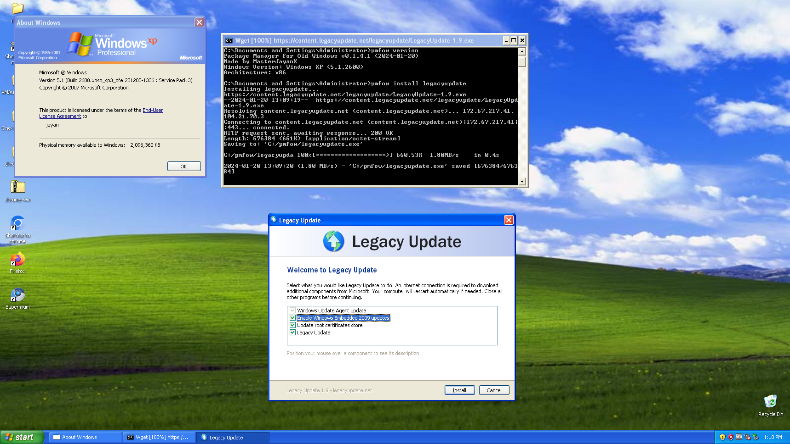

En esta página, podrás encontrar información sobre mis proyectos.
JRescue: Sistema operativo dedicado a hacerle mantenimiento a algún PC que lo requiera. Puedes encontrar toda la información sobre este proyecto haciendo clic aquí.
OneClickAppInstaller: pequeño programa que te permite crear un script para instalar múltiples aplicaciones en Windows, macOS o Linux con un solo clic. Puedes encontrar toda la información sobre este proyecto haciendo clic aquí.
pmfow (Package Manager for Old Windows): Gestor de paquetes para versiones antiguas de Windows. Puedes encontrar toda la información sobre este proyecto haciendo clic aquí.

Este sitio web: Técnicamente este sitio web cuenta como un proyecto personal para compartir lo que yo quiera.
Mi sitio web antiguo: Entre el 2018 y el 2019 usaba un sitio web que creé usando Wix, aunque dejé de usarlo porque no le veía un uso concreto a dicha página. Además, su diseño lo sentía muy barato. A pesar de que ya no la actualizo, decidí hacerla pública para que puedan conocer un poco de mi pasado y pueden visitarla haciendo clic aquí.